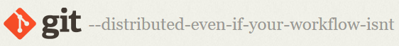
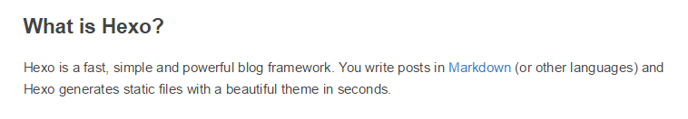
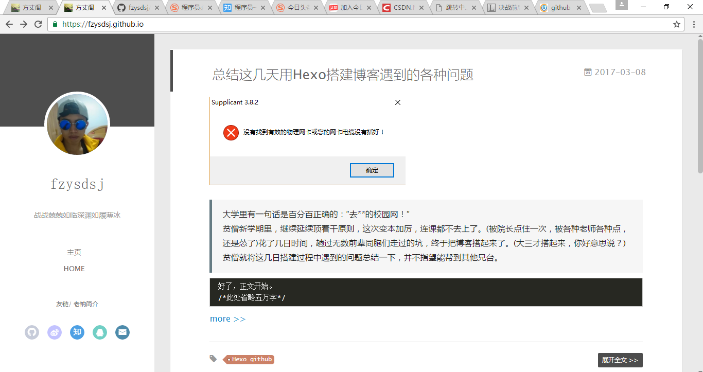

X tool
X tool?
The fact is that few people with high personal technical ability, under the good hardware conditions, using DDNS technology, can achieve erratic personal site. Rough statistics, the broadband services with fixed IP, the lowest start in 24,000 yuan, this is obviously unacceptable cost of personal site. So some people intend to set up their own blog,which is why I stand here
The second part ∈ 贾耀康
Blog >=Git↑ + GitHub↑ + Node.js↑ +Hexo↑ +others↑
Git↑ + Node.js↑ =Generate the local blog
local blog + Hexo + GitHub
weblog！！！
As we said before ,we‘d like to create a blog of our own,but how ? Well ,what we aim to do is writing a series of instructions to make a model of a blog on your own computer with the help of Node and hexo,then using the instruction git to let the server github in charge of the blog.Here come the advantages of this way:1.no charge 2.With the github in charge of the blog,you don’t need to maintain the server every day Most importantly,it’s very easy,just like a piece of cake.The only thing that might bother you is the setup of the software,which include git,node.js,and hexo.Then with an account number of github and normal web condition,you are good to go!Next,let’s get to know these software.

Git is a free and open source distributed version control system designed to handle everything from small to very large projects with speed and efficiency.
The irony is that the "lazy people" who invented the Linux invented the Git
<!DOCTYPE html>
<html lang="en">
<head>
<meta charset="UTF-8">
<title>github</title>
</head>
<body>
<p>GitHub is a web-based Git or version control repository <p>
<p> and Internet hosting service.It offers all of the distributed </p>
<p> version control and source code management (SCM) functionality of Git as well as </p>
<p>adding its own features. </p>
<p>It provides access control and several collaboration features such as bug tracking, </p>
<p> task management, and wikis for every project.</p>
</body>
</html>
Run the node.js need:
A:npm可以大写吗？
B：不可以！
A：那npm是什么单词的简写吗？
B：是"npm" 不是一个缩写的简写
Simple, fast and powerful Node. Js static blog framework

When you use hexo set up such a blog, the * * feeling...